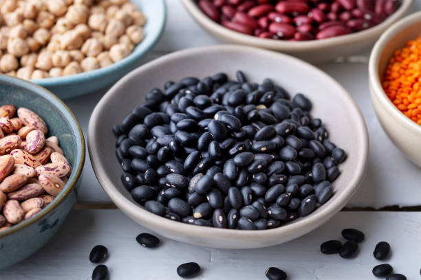
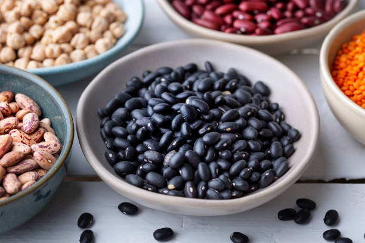
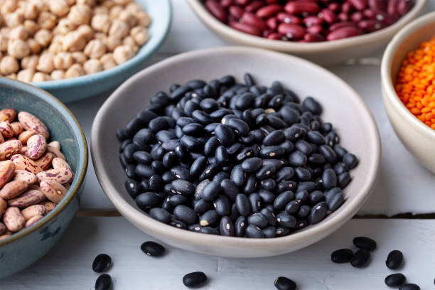

Beans are a nutritious and versatile food, enjoyed in cuisines around the world.
They come in many varieties, including black beans, kidney beans, chickpeas, and lentils,
each offering a rich source of protein, fiber, and essential vitamins. Beans are an excellent
plant-based protein option, making them a staple in vegetarian and vegan diets.
They also support heart health, aid digestion, and help regulate blood sugar levels.
Whether added to soups, salads, stews, or burritos, beans bring a delicious texture and flavor
to meals. Plus, they are affordable, easy to store, and environmentally friendly compared to
many animal-based proteins.
